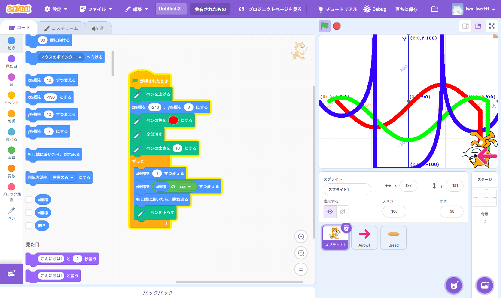
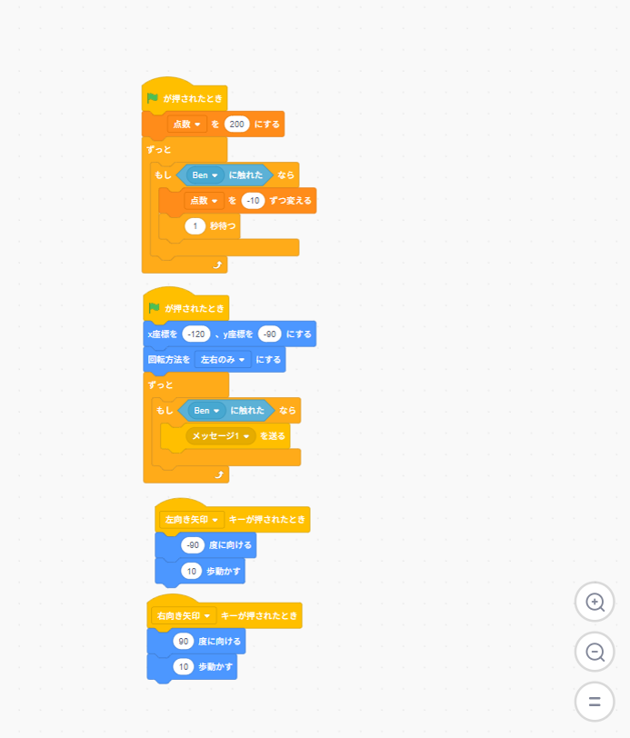
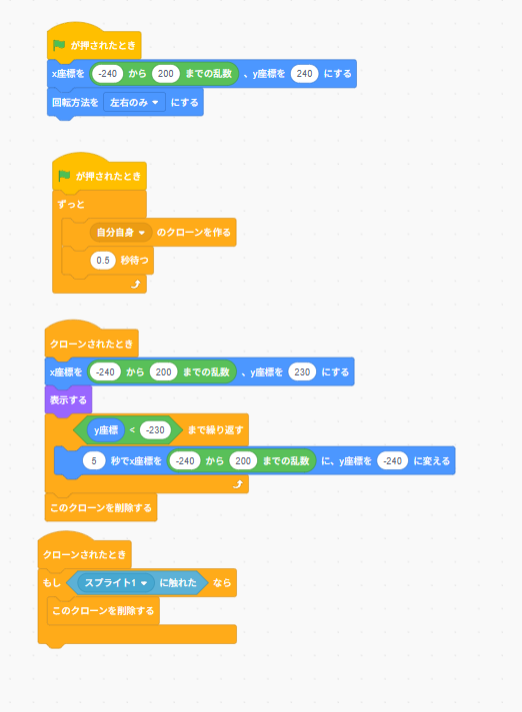
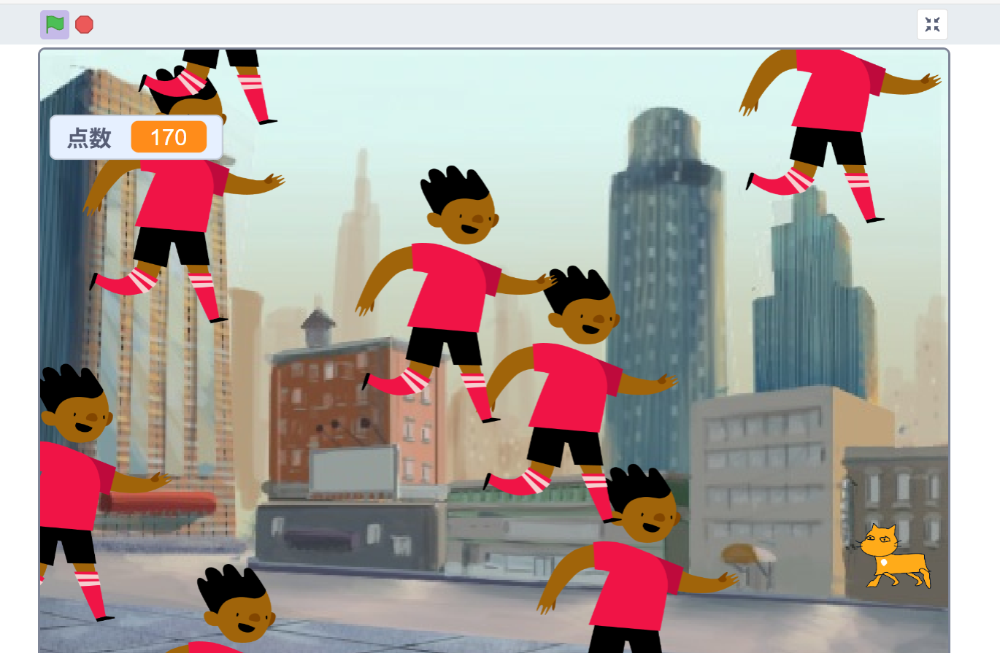

1週目のレポート ： 公大高専1年実習I-1
1a班05番 iwa_doushiyo
第1週目
1-1 サイエンスアート

1.内容
y軸がsinとcosとtanを同じ地点から出発させて線を描いた。また、線同士を比べやすくするために
見分けやすい色である、三原色に近いにしたことで、直感的にわかるようにした。
2.感想
数学のアプリですべての三角関数がそろっているグラフは見たことがあったが、
色が同じで分かりにくかった。しかし、これは色が違うので何が何かわかりやすかった。
また、スクラッチを触ったことがあったが線を描いたことはなかったので新鮮な体験だった。
1-2 ゲーム
  
1.内容
猫が上から追ってくる少年から逃げるゲームを作成した。ここではクローンを
利用することで少ないコードでもたくさん少年を出せた。また、得点に関しても、
最初は200点を付与し、当たったら10を引いていく減算方式で作成した。
加えて、スプライトを自作した。
2.感想
自分でほしいと思ったゲームを自分の好きなようできるのがとても楽しかった。また、
自分の考えをうまく形にすることがとても難しかったが、形にすることができて興味がわいた。
1-3 ホームページ作成
私のホームページ
1.内容
学習した内容を説明する文章を
自分で考えて作成する（50文字以上．100文字程度を推奨．※生成AIを使ってはいけない）
2.感想
学習した内容を実践したときに自分が感じた感想を
自分で考えた文章で作成する（50文字以上．100文字程度を推奨．※生成AIを使ってはいけない）
各ページへのリンク
1週目のレポート
2週目のレポート
3週目のレポート
私のホームページ